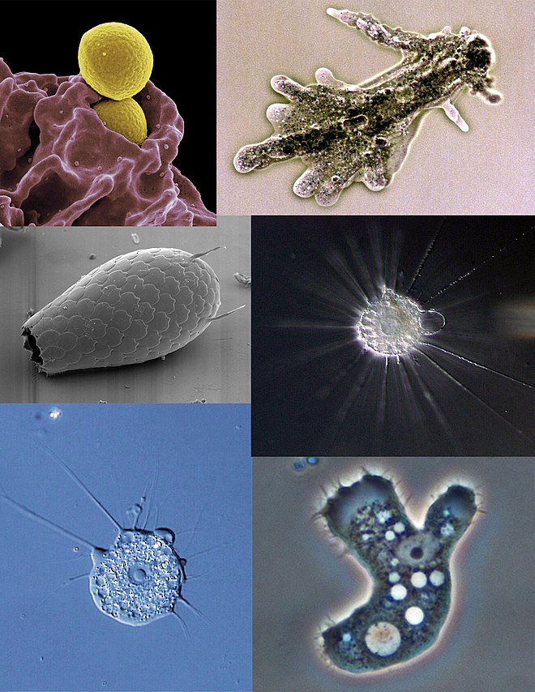
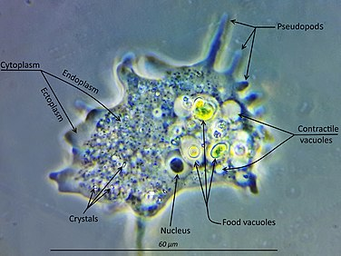
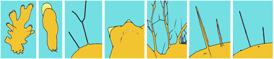

An amoeba (/əˈmiːbə/; less commonly spelled ameba or amœba; plural am(o)ebas or am(o)ebae /əˈmiːbi/),[1] often called an amoeboid, is a type of cell or unicellular organism which has the ability to alter its shape, primarily by extending and retracting pseudopods.[2] Amoebae do not form a single taxonomic group; instead, they are found in every major lineage of eukaryotic organisms. Amoeboid cells occur not only among the protozoa, but also in fungi, algae, and animals.[3][4][5][6][7]
Microbiologists often use the terms "amoeboid" and "amoeba" interchangeably for any organism that exhibits amoeboid movement.[8][9]
In older classification systems, most amoebae were placed in the class or subphylum Sarcodina, a grouping of single-celled organisms that possess pseudopods or move by protoplasmic flow. However, molecular phylogenetic studies have shown that Sarcodina is not a monophyletic group whose members share common descent. Consequently, amoeboid organisms are no longer classified together in one group.[10]
The best known amoeboid protists are Chaos carolinense and Amoeba proteus, both of which have been widely cultivated and studied in classrooms and laboratories.[11][12] Other well known species include the so-called "brain-eating amoeba" Naegleria fowleri, the intestinal parasite Entamoeba histolytica, which causes amoebic dysentery, and the multicellular "social amoeba" or slime mould Dictyostelium discoideum.
Amoeba do not have cell walls, which allows for free movement. Amoeba move and feed by using pseudopods, which are bulges of cytoplasm formed by the coordinated action of actin microfilaments pushing out the plasma membrane that surrounds the cell.[13] The appearance and internal structure of pseudopods are used to distinguish groups of amoebae from one another. Amoebozoan species, such as those in the genus Amoeba, typically have bulbous (lobose) pseudopods, rounded at the ends and roughly tubular in cross-section. Cercozoan amoeboids, such as Euglypha and Gromia, have slender, thread-like (filose) pseudopods. Foraminifera emit fine, branching pseudopods that merge with one another to form net-like (reticulose) structures. Some groups, such as the Radiolaria and Heliozoa, have stiff, needle-like, radiating axopodia (actinopoda) supported from within by bundles of microtubules.[3][14]
Free-living amoebae may be "testate" (enclosed within a hard shell), or "naked" (also known as gymnamoebae, lacking any hard covering). The shells of testate amoebae may be composed of various substances, including calcium, silica, chitin, or agglutinations of found materials like small grains of sand and the frustules of diatoms.[15]
To regulate osmotic pressure, most freshwater amoebae have a contractile vacuole which expels excess water from the cell.[16] This organelle is necessary because freshwater has a lower concentration of solutes (such as salt) than the amoeba's own internal fluids (cytosol). Because the surrounding water is hypotonic with respect to the contents of the cell, water is transferred across the amoeba's cell membrane by osmosis. Without a contractile vacuole, the cell would fill with excess water and, eventually, burst. Marine amoebae do not usually possess a contractile vacuole because the concentration of solutes within the cell are in balance with the tonicity of the surrounding water.[17]
 The food sources of amoebae vary. Some amoebae are predatory and live by consuming bacteria and other protists. Some are detritivores and eat dead organic material.
Amoebae typically ingest their food by phagocytosis, extending pseudopods to encircle and engulf live prey or particles of scavenged material. Amoeboid cells do not have a mouth or cytostome, and there is no fixed place on the cell at which phagocytosis normally occurs.[18]
Some amoebae also feed by pinocytosis, imbibing dissolved nutrients through vesicles formed within the cell membrane.[19]